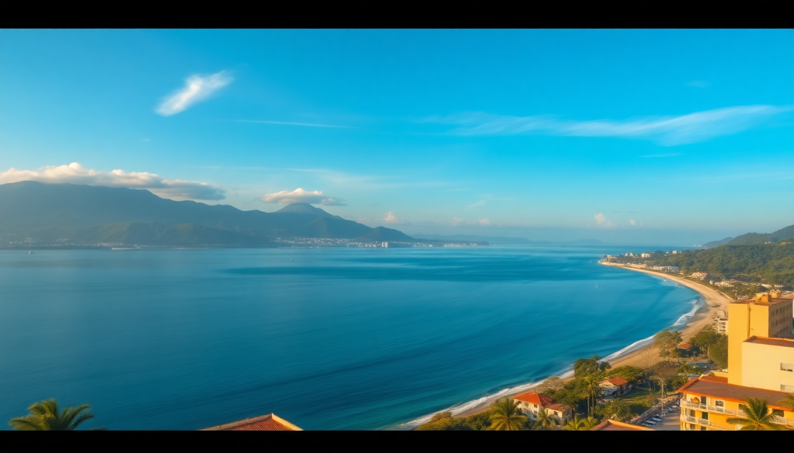

Best Beaches in Colombia: Cartagena, Santa Marta & San Andrés

I spent three weeks hopping between Colombia’s Caribbean coast and the offshore island of San Andrés, chasing good sand and clear water. What I found: a lot of overpriced tourist traps, a few genuinely beautiful stretches of coast, and some unexpected surprises. Here’s what I’d do again — and what I’d skip.
Which beaches in Cartagena are actually worth your time?
Cartagena’s city beaches — Bocagrande, Castillogrande, and El Laguito — are fine for a quick dip if you’re staying in the high-rise hotel zone, but the water is murky and the sand is packed with vendors. I wouldn’t plan a beach day there.
The real winners are a short boat ride away. Islas del Rosario and Playa Blanca on Isla Barú are the most popular day trips, and for good reason: the water is turquoise and calm. But Playa Blanca gets slammed on weekends and the vendors can be relentless. I went on a Tuesday and still got offered a massage, ceviche, and a hammock rental within five minutes of sitting down.
- Islas del Rosario — clearer water than Playa Blanca, more coral, and quieter if you take a small-group tour instead of the big catamarans.
- Playa Blanca — best on a weekday. Bring cash for lunch at Restaurante El Pelícano (grilled fish with coconut rice is the move).
- Playa Tranquila — a quieter stretch on Barú, accessible only through a small eco-hotel. I paid 20,000 COP for entry and had the place nearly to myself.
- Cholón — a sandbar party spot. Fun for an hour, but the water is shallow and crowded with boats blasting reggaeton. Skip if you want to swim.
What are the best beaches around Santa Marta for swimming and snorkeling?
Santa Marta itself has a gritty, working port vibe, and the beach in town (Rodadero) is packed and not especially clean. The good stuff is east, inside Parque Nacional Natural Tayrona. I spent three days there and could have stayed a week.
Tayrona’s beaches are stunning, but not all are swimmable. The park has strong currents, and several stretches are marked with red flags. I saw people ignore them and get pulled out by lifeguards. Pay attention.
- Cabo San Juan del Guía — the iconic Tayrona beach with the big boulder and the hammock camp. Swimming is safe in the protected cove. Get there early (before 8 AM) to claim a spot.
- La Piscina — my favorite for actual swimming. Calm, shallow, and surrounded by jungle. No vendors, just waves and birds.
- Playa Cristal — requires a separate entry fee (about 15,000 COP) and a short hike from the main road. Crystal-clear water, good snorkeling, and a small restaurant serving fresh fish.
- Bahía Concha — just outside the park entrance. Less crowded than Tayrona proper, with calm water and a few beach clubs. I ate a whole fried snapper at Kiosko Donde Chucho for 25,000 COP.
Is San Andrés worth the flight from the mainland?
Short answer: yes, if you go for the water. The island’s beaches and sea are genuinely world-class — the water clarity rivals the Bahamas, and the sand is that fine, white, squeaky stuff. But the island itself is built for mass tourism: all-inclusive resorts, jet skis, and duty-free shopping. I found the vibe a bit soulless compared to the mainland coast.
The best beaches are on the less-developed east side, away from the main strip in San Andrés Town. Rent a golf cart or a scooter and drive the island loop (about 20 miles). I rented a golf cart for 80,000 COP per day and it was the best decision I made.
- Playa de Spratt Bight — the main beach in town. Fine for a sunset walk but crowded and lined with loud bars.
- Playa de San Luis — east coast, quieter, with a few family-run posadas. I stayed at Posada Nativa Miss Zoraida and had breakfast on a porch overlooking the water.
- Playa de los Enamorados — a tiny, secluded cove near San Luis. Great for snorkeling. I saw a sea turtle within five minutes of getting in.
- Cayo Cangrejo — a sandbar accessible by boat from Spratt Bight. Perfect for a half-day trip. Bring reef-safe sunscreen — the coral is fragile and you’ll be fined if caught with standard sunscreen.
- Johnny Cay — a small island with a white-sand beach and a few thatched-roof restaurants. It’s touristy but the water is absurdly clear. I paid 10,000 COP for entry.
When is the best time to visit these beaches?
I went in late January and had mostly sunny days with brief afternoon showers. The Caribbean coast has two dry seasons: December to April and July to August. The rainiest months are October and November, when some beaches in Tayrona close due to strong currents and rough seas.
- High season (December–March) — best weather, but crowded and expensive. Book Tayrona park entry and accommodation in San Andrés at least a month ahead.
- Shoulder (July–August) — good weather, fewer crowds. I’ve heard water visibility in San Andrés is best in August.
- Low season (September–November) — cheapest, but you risk rain and rough seas. Some beach clubs and restaurants in Tayrona close entirely in October.
Where should I stay near the best beaches?
I split my trip between three bases: Cartagena’s walled city, a beachside eco-hut in Tayrona, and a posada in San Andrés. Each served a different purpose.
- Cartagena — I stayed in Getsemaní, a neighborhood just outside the walled city. It’s grittier but more authentic, and the food is better and cheaper. Hotel Casa San Agustín is a splurge with a pool and rooftop bar. For budget, Selina Cartagena has a hostel vibe and a decent co-working space.
- Santa Marta / Tayrona — I recommend staying inside Tayrona at Ecohabs Tayrona or Cabo San Juan’s hammock camp for the full experience. Outside the park, Hotel Playa de la Rivera in El Rodadero is a mid-range option with direct beach access.
- San Andrés — skip the all-inclusive resorts on the west side. I stayed at Posada Nativa Miss Zoraida in San Luis, which cost 120,000 COP per night including breakfast. The owner arranged a snorkeling trip for 40,000 COP.
FAQ
Are the beaches in Cartagena safe for swimming? The city beaches (Bocagrande, Castillogrande) have moderate currents and some pollution. I wouldn’t swim far out. The beaches at Islas del Rosario and Playa Blanca are much safer for swimming, with calm, shallow water and no rip currents.
Do I need to book Tayrona park entry in advance? Yes, during high season (December–April). The park caps daily visitors at around 3,000, and entry often sells out by 9 AM. Book online through the official Parque Tayrona site at least a week ahead. Off-season, you can buy at the gate.
What’s the best way to get from Cartagena to Santa Marta? I took a shared van (colectivo) from Cartagena’s Terminal de Transportes to Santa Marta’s main terminal. It cost 40,000 COP and took about 4 hours. Buses are slightly cheaper but slower. Avoid the overnight bus — the road is winding and stops are frequent.
Conclusion
- Cartagena’s city beaches are skippable; head to Islas del Rosario or Playa Blanca for clear water.
- Tayrona’s Cabo San Juan and La Piscina are the best swim spots on the mainland — get there early.
- San Andrés delivers on water quality but not on culture; rent a golf cart and stay on the east side.
- Travel during the dry season (December–April) for the best conditions and book park entry in advance.
- Stay in Getsemaní for Cartagena, inside Tayrona for nature, and a posada in San Luis for San Andrés.